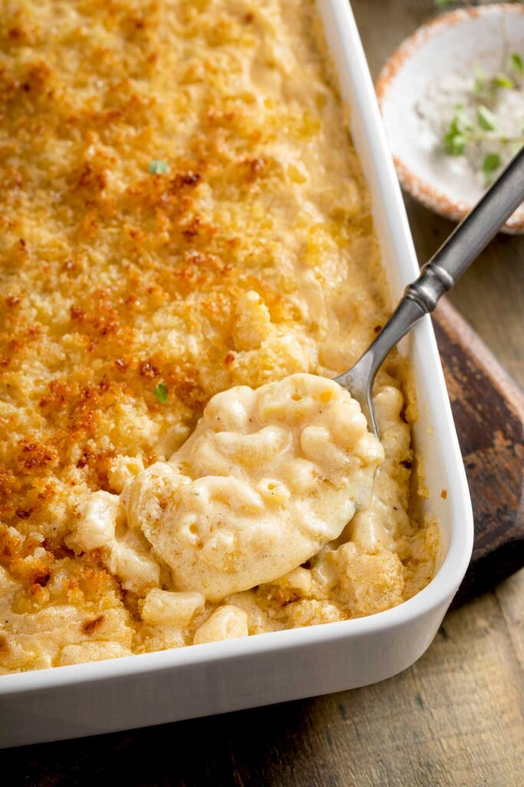

Mac and Cheese Recipe
Description
Classic Homemade Mac and Cheese made with bite-size pasta, cheddar cheese, and a simple creamy sauce all baked to perfection in the oven. This recipe includes tips, tricks, and photos for making PERFECT baked mac and cheese. WARNING: this recipe is seriously cheesy!

Ingredients
- 1 lb. dried elbow pasta
- 1/2 cup unsalted butter
- 1/2 cup all purpose flour
- 1 1/2 cups whole milk
- 2 1/2 cups half and half
- 4 cups shredded medium cheddar cheese
- 2 cups shredded Gruyere cheese
- 1/2 Tbsp. salt
- 1/2 tsp. black pepper
- 1/4 tsp. paprika
Steps
- Preheat oven to 325 degrees F and grease a 3 qt baking dish (9x13"). Set aside.
- Bring a large pot of salted water to a boil. When boiling, add dried pasta and cook 1 minute less than the package directs for al dente. Drain and drizzle with a little bit of olive oil to keep from sticking.
- While water is coming up to a boil, shred cheeses and toss together to mix, then divide into three piles. Approximately 3 cups for the sauce, 1 1/2 cups for the inner layer, and 1 1/2 cups for the topping.
- Melt butter in a large saucepan over MED heat. Sprinkle in flour and whisk to combine. Mixture will look like very wet sand. Cook for approximately 1 minute, whisking often. Slowly pour in about 2 cups or so of the half and half, while whisking constantly, until smooth. Slowly pour in the remaining half and half plus the whole milk, while whisking constantly, until combined and smooth.
- Continue to heat over MED heat, whisking very often, until thickened to a very thick consistency. It should almost be the consistency of a semi thinned out condensed soup.
- Remove from the heat and stir in spices and 1 1/2 cups of the cheeses, stirring to melt and combine. Stir in another 1 1/2 cups of cheese, and stir until completely melted and smooth.
- In a large mixing bowl, combine drained pasta with cheese sauce, stirring to combine fully. Pour half of the pasta mixture into the prepared baking dish. Top with 1 1/2 cups of shredded cheeses, then top that with the remaining pasta mixture.
- Sprinkle the top with the last 1 1/2 cups of cheese and bake for 15 minutes, until cheesy is bubbly and lightly golden brown.
- Enjoy!